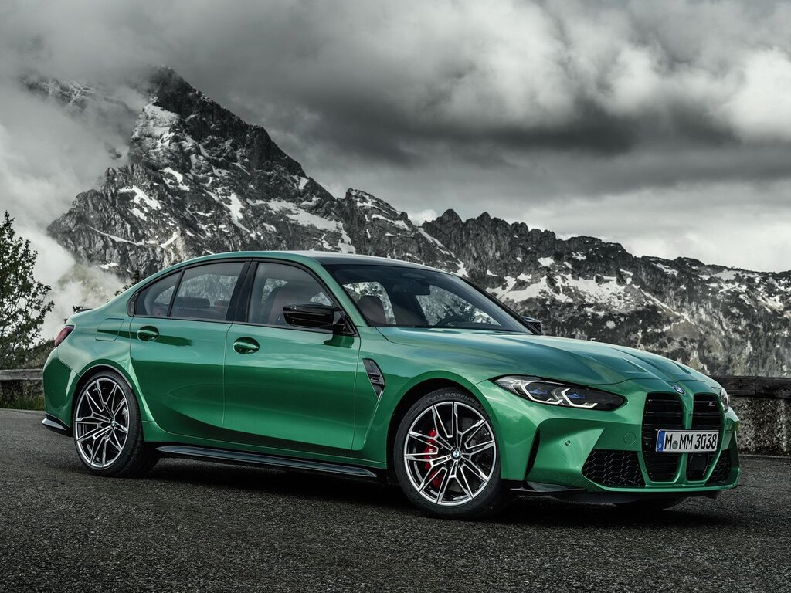

The new M3

As this iconic sports car enters its sixth generation the BMW M3 Sedan
and M3 Competition Sedan show just how much racing performance is
possible with a BMW 3 Series. This comes courtesy of a 480 hp BMW M
TwinPower Turbo engine, rear-wheel drive and highly developed
technologies derived from motorsport, such as the M specific suspension
with Active M Differential. A perfectly graduated manual 6-speed M
transmission with short, precise shifting enables particularly intensive
interaction between driver and vehicle - in everyday driving as well as on the racetrack.
3 modifications of BMW M3
- BMW M3 Sedan
- BMW M3 Competition Sedan
- BMW M3 Performance